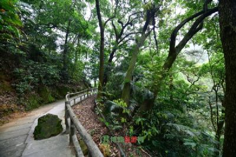

巫溪县
位于长江上游地区、重庆东北部，处大巴山东段南麓，是
典型的山区农业县。
巫溪县地处渝陕鄂三省交界，东连湖北省神农架林区、竹
溪县，南接奉节县、巫山县，西临开县、云阳县，北与城口县
和陕西省镇坪县接壤。截止到2013年，巫溪县总面积4030平方
公里。2010年第六次全国人口普查，巫溪县常住人口为41.41万
人(户籍人口52万人)。
巫溪县为全国绿化模范县，获得过"绿色中药出口基
地"、"全国魔芋种植重点基地县"、"中国绿色生态马铃薯
之乡"、"2011中国改革年度县"等荣誉称号。
|
|  |
红池坝国家森林公园位于重庆市巫溪县境内，距重庆主城440km，距万州200km，距县城84Km。公园海拔在1800m至2800m之间，森林草场覆盖总面积约36.2万亩，年均气温7.1℃，极端最高气温29.5℃，最低气温-25.8℃，冬季积雪期4个月，负氧离子含量为每个平方高达2000个以上。公园拥有得天独厚的生态资源和人文、自然景观，园内分四大区域（云中花海、天子城草原、西流溪和团城景区）近60个人文、自然风光景点，其中，国家特级景点2个 |
|
国家AA级景区灵巫洞，位于大宁河上游，距巫溪县城12KM。这里山青水秀峡幽，岩险峰奇洞绝。置身洞俯前，有“前行一步入仙境，百念俱消，心生梦幻；后退几阶临羼崖，万峰峻耸，目极云烟”之空灵澄明之感。东岸主洞琳宫，全长1500M，由仙翁殿、玉竹林、瑶池、龙王殿、海底世界五大部分组成，洞内钟乳琳琅满目，流光溢彩，其定海神针、钟乳天桥、九龙壁为中国溶洞“三绝”。西岸主洞桃源洞内，各种钟乳上悬下立，姿态万千，还有“十巫”大型 |
|
荆竹峡-神谷景区位于大宁河上游荆竹峡内，全长7km，距巫溪县城21km。景区“苍苍两崖间，阔窄容一苇”，两岸悬岩对峙，峭壁如削；岩上羊肠古道，盘折崎岖；四周高山荆竹满山，满目苍翠，宛如画屏。河西是重庆市级重点文物保护单位----荆竹坝先秦濮族岩棺群，现存岩棺24具，首尾相接，古人因何原因采用什么方式把这些整木剜造的木棺搁放到距河面300多米的岩缝中，至今还是未解之谜。建于荆竹坝宽阔地带的“-神谷”，占地28亩 |
|